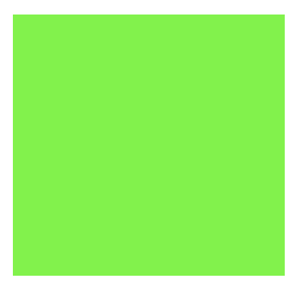

Title

If not being (something)
is the same as being,
then I will live forever.
•
Round shadow inside
the sunflower’s
corona.
•
If I lived forever
would the present’s noose
be looser?
•
Moon shadow
made of angry bees,
confined. Come in.
– Rae Armatrout
↑